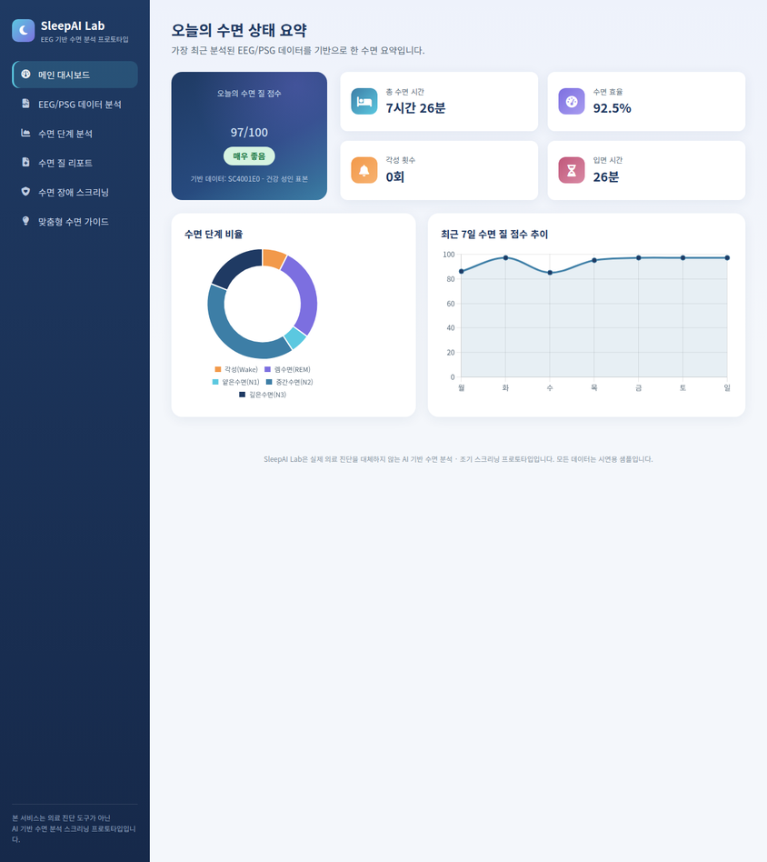
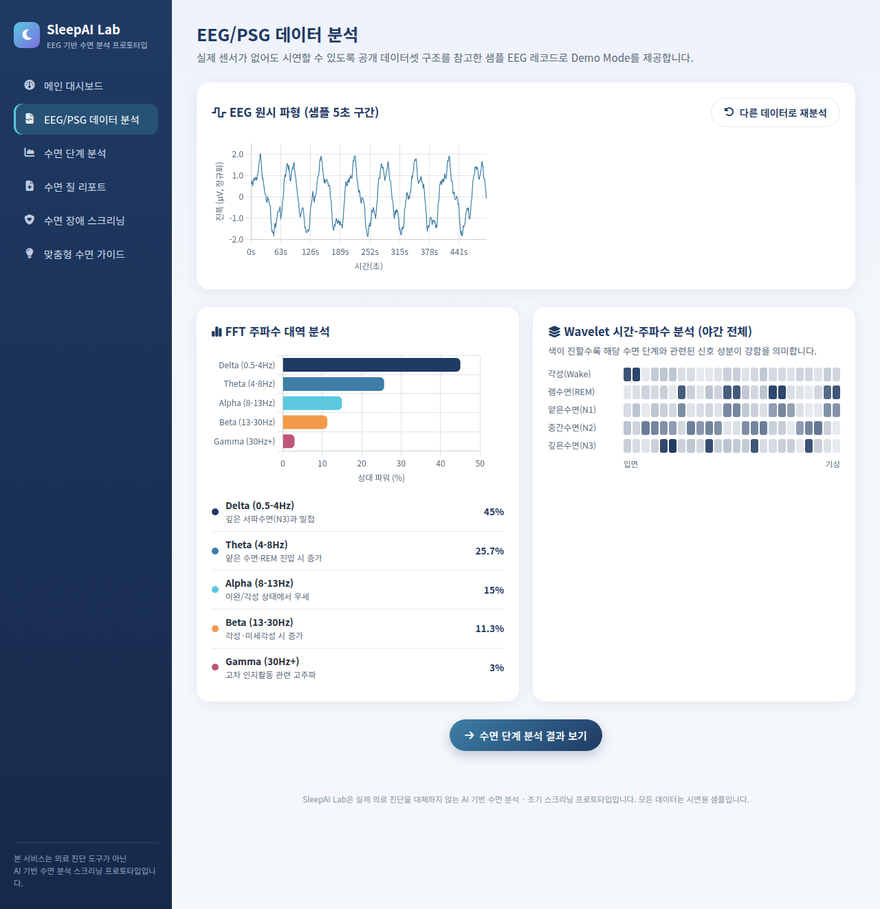
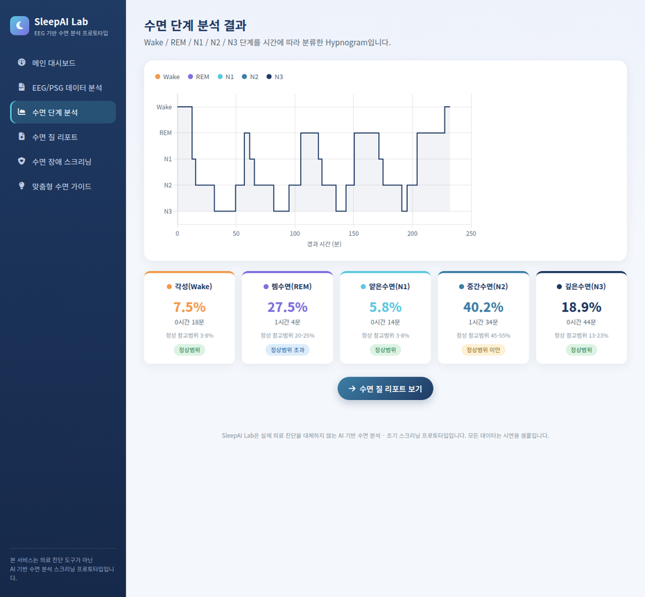
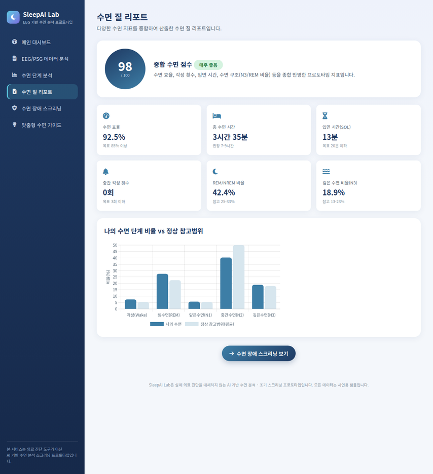
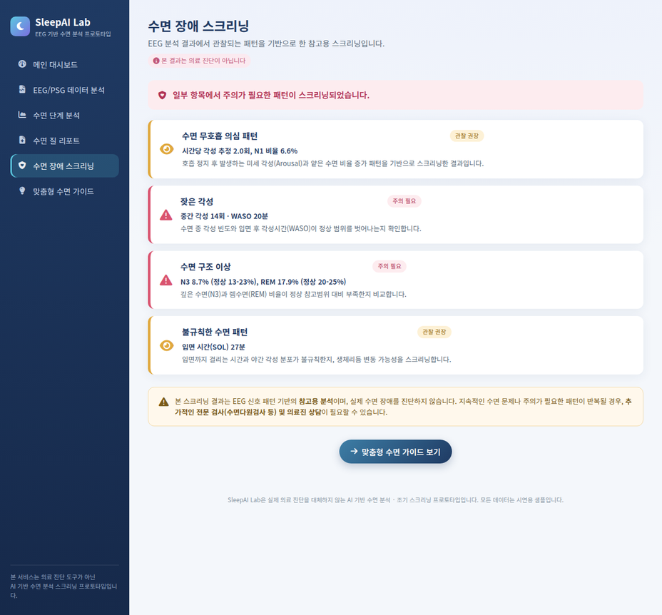
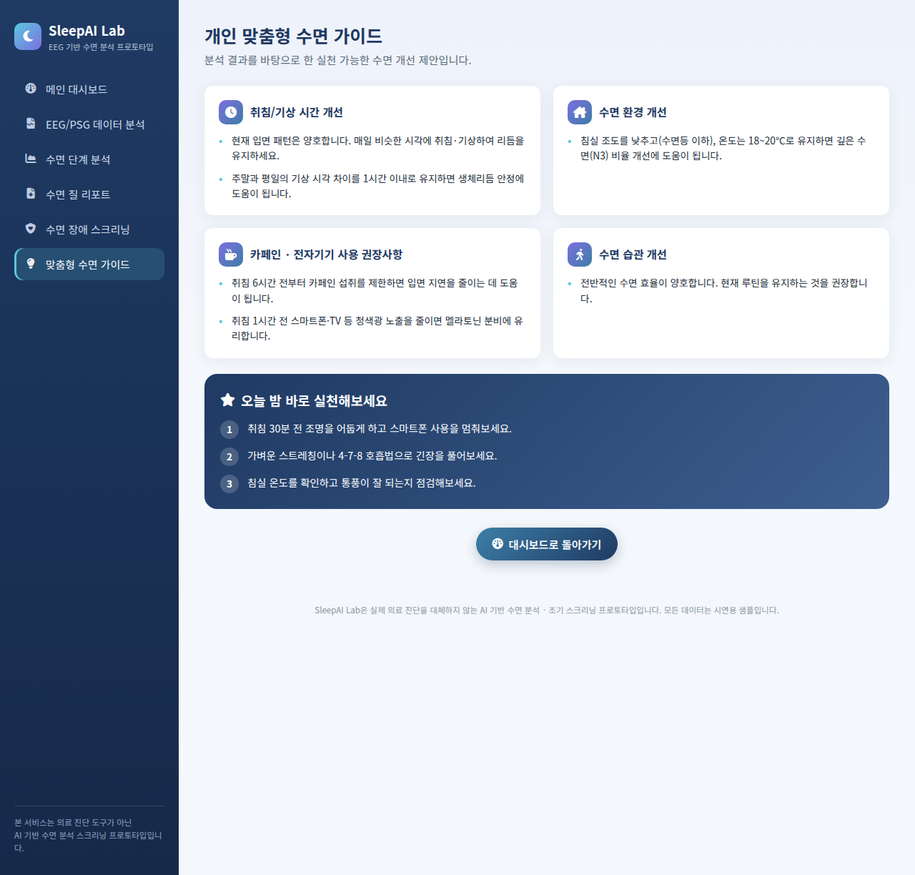
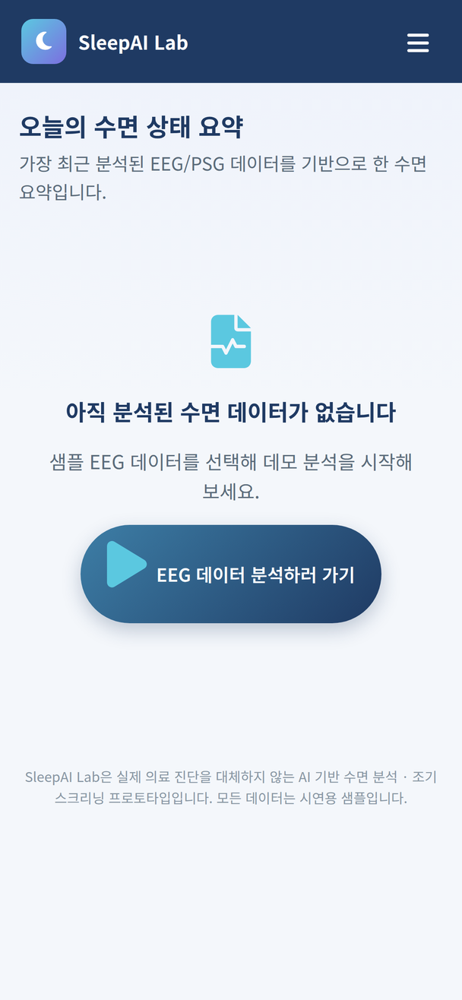

EEG 기반 수면 단계 분석 & 수면 장애 조기 스크리닝 서비스
본 프로젝트는 실제 의료 진단을 대체하지 않는 AI 기반 수면 분석 프로토타입입니다.
수면 부족과 수면장애는 만성질환, 인지기능 저하, 삶의 질 저하로 이어질 수 있어 조기 인식과 관리가 중요합니다.
움직임(가속도) 기반 추정 → 실제 뇌파와 무관, 수면 단계 정확도에 한계
주관적 인식에 의존 → 실제 수면 구조(N1~N3, REM)를 알 수 없음
가장 정확하지만 高비용·예약 대기·1회성 검사로 일상적 추적 어려움
EEG는 실제 뇌활동을 반영하는 가장 객관적인 수면 지표입니다. AI 분석을 결합하면 병원급 정밀도에 근접한 결과를 더 쉽고 빠르게 제공할 수 있습니다.
Wake / REM / N1 / N2 / N3 단계를 AI로 자동 분류하여 Hypnogram 형태로 제공
무호흡 의심 · 잦은 각성 · 수면구조 이상 등 주의가 필요한 패턴을 조기에 확인
종합 점수와 지표를 기반으로 실천 가능한 맞춤형 개선 방안을 제안
6단계 파이프라인을 통해 원시 EEG 신호가 사용자가 이해할 수 있는 수면 리포트로 변환됩니다.
| 1. 데이터 수집 | EEG/EOG/EMG 등 다채널 생체신호를 30초 단위 Epoch으로 기록 (Sleep-EDF/SHHS 표준 구조 참고) |
|---|---|
| 2. 전처리 | 노이즈 제거, 필터링(밴드패스), 아티팩트(잡파) 제거로 신호 품질 확보 |
| 3. 특징 추출 | FFT로 주파수 대역(Delta/Theta/Alpha/Beta/Gamma) 파워 산출, Wavelet으로 시간-주파수 변화 포착 |
| 4. AI 분석 | CNN으로 Epoch 단위 패턴 인식, RNN(LSTM)으로 수면 단계의 시계열적 흐름을 반영 |
| 5. 이상 패턴 분석 | 각성 빈도, N1 비율, 수면 구조 붕괴 등 스크리닝 룰 기반 패턴 탐지 |
| 6. 리포트 생성 | 수면 질 점수, Hypnogram, 스크리닝 결과, 맞춤형 가이드를 자동 생성 |
PhysioNet 제공, EEG(Fpz-Cz, Pz-Oz)·EOG·EMG 채널의 야간 수면 기록 (100Hz)
대규모 코호트의 다채널 PSG 데이터, 호흡·산소포화도 등 추가 지표 포함
위 데이터셋 구조를 참고해 생성한 시뮬레이션 데이터로 Demo Mode 제공
30초 Epoch
다채널 EEG
Epoch 내
주파수·형태 특징 추출
Epoch 간
시계열 패턴 학습
Wake/REM/
N1/N2/N3 분류
모델 성능은 Accuracy, F1-score, Cohen's Kappa(수면단계 분류 표준 지표), 혼동행렬(Confusion Matrix)을 통해 단계별 분류 정확도를 평가합니다.







병원 방문 없이도 일상적으로 수면 상태를 추적하고 이해할 수 있음
이상 패턴을 조기에 스크리닝하여 전문 진료 연계 시점을 앞당김
개인 맞춤형 가이드를 통한 지속적인 수면 습관 개선 유도
SleepAI Lab은 AI 기반 수면 분석 및 수면 장애 조기 스크리닝을 위한 프로토타입입니다.